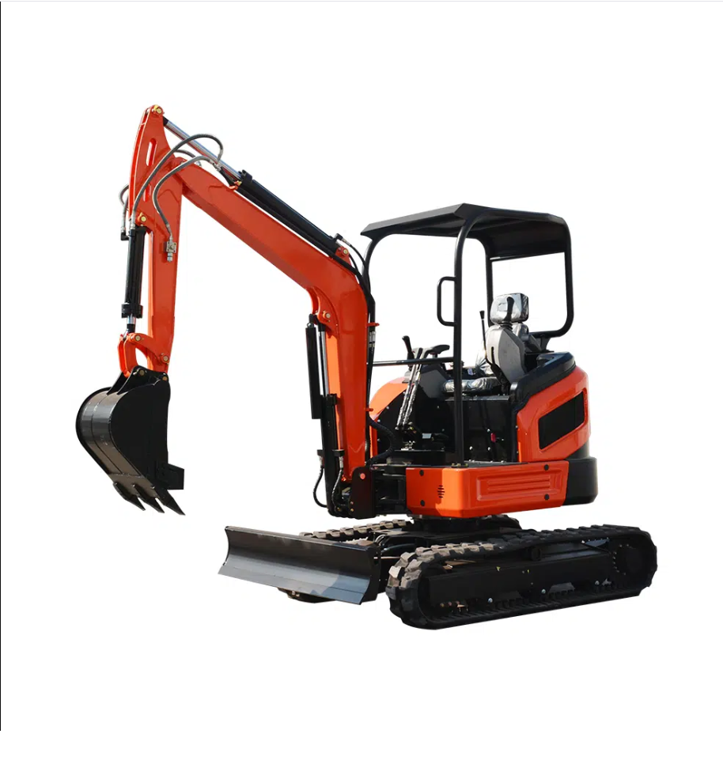

BOARIX HEAVY MACHINERY
Technická značka stavebních strojů zaměřená na odolnost, stabilitu, bezpečnost a dostupný servis. BOARIX pomáhá zákazníkům vybrat stroj, který dává smysl pro jejich práci.
Stroje připravené na náročné podmínky a každodenní práci v terénu.
Podpora, náhradní díly a servisní zázemí pro rychlé řešení požadavků.
Každý stroj má před předáním projít kontrolou a základním ověřením.
Jasná komunikace, individuální přístup a možnost řešit financování.
Naše stroje
BOARIX počítá s rozšiřováním nabídky strojů a příslušenství. Zákazník jednoduše najde kategorii, porovná možnosti a odešle poptávku.

Kompaktní stroje pro výkopové práce, úpravy pozemků a menší stavby.
Praktická technika pro manipulaci s materiálem a práci kolem stavby.
Stroje pro převoz materiálu v místech, kam se větší technika nevejde.
Lžíce, doplňky a další vybavení podle konkrétního typu práce.
Proč BOARIX
BOARIX nechce působit jako levná jednorázová značka. Cílem je stavět na spolehlivosti, dostupnosti dílů, servisu a jasné komunikaci se zákazníkem.
Služby BOARIX
Pomůžeme vybrat vhodný model podle hmotnosti, šířky, výkonu a typu práce.
Zákazník má jasné místo, kam se obrátit při požadavku na servis nebo díly.
Možnost řešit nákup stroje individuálně, včetně budoucí nabídky financování.
možnost odeslat požadavek
směr servisní podpory
důraz na kontrolu
technická značka strojů
Kontakt
Pošlete nám poptávku a připravíme doporučení podle vašeho využití.